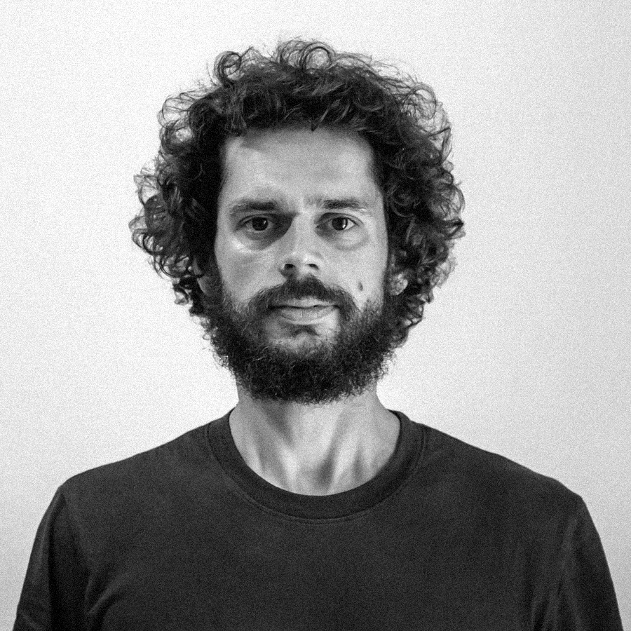

<div class="container-fluid d-flex vh-100 about-container">
    <div class="row pl-5 pr-5 d-flex mt-5 ml-5 animated fadeIn" style="flex-direction: row-reverse;">
        <div class="col-12 col-lg-4 pb-3 mb-3 photo animated fadeIn" style="height:400px;">
            
        </div>
        <div class="col-lg-8 p-3 " style="background-color: rgba(255, 255, 255, 0.356); border-radius: 20px;">
            <span style="font-size: 1.1rem; color: black;">
                My name is André, I am {{age}} years old and I come from Aveiro (Portugal), currently living in Barcelona.
                <p></p>
                In 2008 I graduated from Mechanical Engineering and specialized myself in Lighting Design and Engineerin. I have been professionally related to this field during the last 10 years of my professional career,
                 working for different companies around Europe.
                 <p></p>
                In 2019 I felt a professional restlessness that made me think about my working situation. I had a steady job where I was comfortable at and enjoyed, but I felt the need of learning something new and fresh. I remembered 
                from University that I didn't like programming, but I also recall one professor of mine once telling me "once you learn how to code, it gets really addictive". I also thought as the world is changing at a really fast pace 
                and programming might be really handy in the short future, maybe it was the time to give coding a second chance. 
<p></p>
                 <!-- but my main passion in life has always been music.
                Apart from my big passion in record collection and live shows, I am a synth player in three
                different bands. 6 years ago I was invited to play synth in a band called Vuelve Zinc . With Vuelve Zinc
                we
                have so far recorded two EP’s and one LP, and have already made three tours through Spain. Shortly
                after, I decided with two friends of mine to start a new band called Mayer-Sánchez . Moreover, I got
                invited
                to join a band called Unfollowers , a post-punk/90’s indie based band which earned the tag
                synthgazing-punk after I joined them. Playing synth has taken a big part of my daily routine during the
                last
                6 years. -->
                <p></p>
                So last year I made a big decision in my life: I decided to quit my job and started studying again. My main
                motivation was to recycle myself and start learning new skills so I could search for a new job in an
                industry that I would feel more related to. I decided to learn how to code, got back to my German
                classes
                and also try to spend as much time as possible learning and composing music.
            </span>       

        </div>
        <div class="justify-content-end pt-5 text-right mr-5">
            <button class="btn btn-outline btn-light" [routerLink]="['/home']" routerLinkActive="router-link-active">Back to
                Home</button>
        </div>
    </div>
</div>